us_counties <- aoi_get(state = "conus", county = "all") |>
st_transform(5070)Lab 3: MAUP in Practice — Tessellations and Point-in-Polygon
National Dam Inventory (NID): From Counts to Local Clustering
Background
In this lab we will explore the impacts of tessellated surfaces and the modifiable areal unit problem (MAUP) using the National Dam Inventory maintained by the United States Army Corps of Engineers. The work requires writing reusable functions and careful consideration of feature aggregation/simplification, spatial joins, and data visualization. The end goal is to visualize the distribution of dams and their purposes across the country.
DISCLAIMER: This lab can be computationally intensive. For some steps you may be processing hundreds of millions of relations; run code chunk-by-chunk during development rather than knitting the whole document repeatedly. Your final knit may take a few minutes. Be proud — the report will summarize analyses over very large geometric relations.
This lab covers 4 main skills:
- Tessellating surfaces to discretize space
- Geometry simplification to expedite expensive intersections
- Writing functions to automate repetitive reporting and mapping tasks
- Point-in-polygon counts to aggregate point data
Graduate-Level Expectations
In addition to producing correct code and outputs, your submission should:
- Justify methodological choices: Why did you choose a particular tessellation
keeppercentage for simplification? How did you balance computational efficiency with map detail? - Document performance impacts: Measure and report computation time and geometric accuracy changes resulting from simplification. How do results differ?
- Apply spatial reasoning: Use spatial predicates (e.g.,
st_touches,st_contains) to identify and describe geometric relationships in the dam dataset that raw counts cannot reveal. - Compare across methods: When multiple tessellation approaches yield different clustering patterns, explain which pattern better supports real-world dam management decisions and why.
- Connect to lecture: Explicitly cite the MAUP problem, simplification algorithms (Douglas-Peucker vs. Visvalingam), and spatial predicate definitions from week 3 lectures in your analysis.
Libraries
Question 1:
Here we will prepare five tessellated surfaces from CONUS and write a function to plot them in a descriptive way.
Step 1.1
First, we need a spatial file of CONUS counties. For future area calculations we want these in an equal area projection (EPSG:5070).
To achieve this:
get an
sfobject of US counties (AOI::aoi_get(state = "conus", county = "all"))transform the data to
EPSG:5070
Step 1.2
For triangle based tessellations we need point locations to serve as our “anchors”.
To achieve this:
generate county centroids using
st_centroidSince, we can only tessellate over a feature we need to combine or union the resulting 3,108
POINTfeatures into a singleMULTIPOINTfeatureSince these are point objects, the difference between union/combine is mute
us_centroid <- us_counties |>
st_centroid() Step 1.3
Tessellations/Coverage’s describe the extent of a region with geometric shapes, called tiles, with no overlaps or gaps.
Tiles can range in size, shape, area and have different methods for being created.
Some methods generate triangular tiles across a set of defined points (e.g. Voronoi and Delaunay triangulation)
Others generate equal area tiles over a known extent (st_make_grid)
For this lab, we will create surfaces of CONUS using using 4 methods, 2 based on an extent and 2 based on point anchors:
Tessellations :
st_voronoi: creates a Voronoi tessellationst_triangulate: triangulates a set of points (not constrained)
Coverages:
st_make_grid: creates a square grid covering the geometry of an sf or sfc objectst_make_grid(square = FALSE): creates a hexagonal grid covering the geometry of an sf or sfc objectThe side of coverage tiles can be defined by a cell resolution or a specified number of cell in the X and Y direction
For this step:
- Make a voroni tessellation over your county centroids (
MULTIPOINT) - Make a triangulated tessellation over your county centroids (
MULTIPOINT) - Make a gridded coverage with n = 70, over your counties object
- Make a hexagonal coverage with n = 70, over your counties object
In addition to creating these 4 coverage’s we need to add an ID to each tile.
To do this:
add a new column to each tessellation that spans from
1:n().Remember that ALL tessellation methods return an
sfcGEOMETRYCOLLECTION, and to add attribute information - like our ID - you will have to coerce thesfclist into ansfobject (st_sforst_as_sf)
Last, we want to ensure that our surfaces are topologically valid/simple.
To ensure this, we can pass our surfaces through
st_cast.Remember that casting an object explicitly (e.g.
st_cast(x, "POINT")) changes a geometryIf no output type is specified (e.g.
st_cast(x)) then the cast attempts to simplify the geometry.If you don’t do this you might get unexpected “TopologyException” errors.
voronoi <- us_centroid |>
st_combine() |>
st_cast("MULTIPOINT") |>
st_voronoi() |>
st_as_sf() |>
mutate(ID = 1:n())
triangulate <- us_centroid |>
st_combine() |>
st_cast("MULTIPOINT") |>
st_triangulate() |>
st_as_sf() |>
mutate(ID = 1:n())
gridded <-
st_make_grid(us_counties, n = 70) |>
st_cast() |>
st_as_sf() |>
mutate(ID = 1:n())
hexagon <-
st_make_grid(us_counties, n = 70, square = FALSE) |>
st_cast() |>
st_as_sf() |>
mutate(ID = 1:n())Step 1.4
If you plot the above tessellations you’ll see that the Voronoi, Delaunay triangulation, hexagon, and square grids all produce regions far beyond the boundaries of CONUS.
We need to cut these boundaries to CONUS borders.
To do this, we need two different approaches: - st_intersection() for Voronoi and Delaunay (these tessellations create geometries that extend infinitely/far beyond the study area; intersection clips them at the exact boundary) - st_filter() for hexagon and square grids (these regular grids are already designed to fit; filtering keeps only the tiles that intersect CONUS)
Either way, we’ll need a geometry of CONUS to serve as our clipping feature. We can get this by unioning our existing county boundaries.
conus <- st_union(us_counties)
voronoi <- st_intersection(voronoi, conus)
triangulate <- st_intersection(triangulate, conus)
gridded <- st_filter(gridded, conus)
hexagon <- st_filter(hexagon, conus)Step 1.5
With a single feature boundary, we must carefully consider the complexity of the geometry. Remember, the more points our geometry contains, the more computations needed for spatial predicates our differencing. For a task like ours, we do not need a finely resolved coastal boarder.
To achieve this:
Simplify your unioned border using the Visvalingam algorithm provided by
rmapshaper::ms_simplify.Choose what percentage of vertices to retain using the
keepargument and work to find the highest number that provides a shape you are comfortable with for the analysis:
conus_simple <- conus |>
ms_simplify(, keep = 0.05)
ggplot(conus_simple) +
geom_sf(fill = NA, color = "black", linewidth = 0.3) +
theme_void()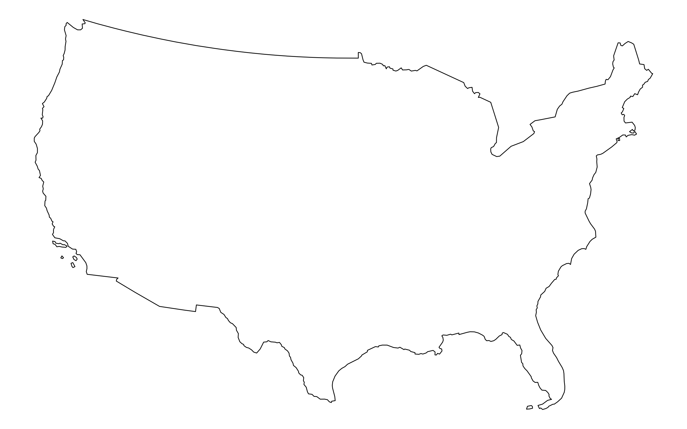
Validation Checkpoint (Optional)
After simplification, verify the boundary is still valid and covers all dams:
# Check: Is the simplified boundary valid? TRUE
st_is_valid(conus_simple)
# Check: Does it still contain all of CONUS? NO (?)
st_bbox(conus_simple) # Should cover roughly [-125, 24] to [-66, 49]
# Check: Visual comparison
plot(conus, main = "Original")
plot(conus_simple, main = "Simplified")
Simplification: Boundary Only, Not Tessellation
Important distinction: This step simplifies the CONUS boundary container we use for clipping the tessellated surfaces. Simplification affects only the geometry of the clipping operation — it speeds up the intersection computation by reducing boundary vertices. Your tessellation tiles themselves remain high-resolution and unchanged. You are not simplifying the tessellation itself, only the container we clip with.
Once you are happy with your simplification, use the
mapview::nptsfunction to report the number of points in your original object, and the number of points in your simplified object.How many points were you able to remove? What are the consequences of doing this computationally?
npts(conus)[1] 11292#11292
npts(conus_simple)[1] 577#577
#I removed 10,715 points which I might discover is an oversimplification down the line. When comparing the plots, though, the two are very similar with simplification of the smaller islands off the east and west coasts. By removing this many points it is likely that this will impact data at the coasts since it is simplified.- Finally, crop all four grids to the CONUS boundary—but using different methods:
- Voronoi & Delaunay (geometry-based tessellations): Use
st_intersection()to cut these geometries at the CONUS boundary. These tessellations create boundaries that extend well beyond CONUS; intersection actually trims them. - Hexagon & Square grids (regular grids): Use
st_filter()to keep only tiles that touch CONUS. These grids are already regularly aligned; filtering just discards edge tiles without modifying them.
- Voronoi & Delaunay (geometry-based tessellations): Use
voronoi_conus <- st_intersection(voronoi, conus_simple)
triangulate_conus <- st_intersection(triangulate, conus_simple)
hexagon_conus <- st_filter(hexagon, conus_simple)
grid_conus <- st_filter(gridded, conus_simple)
Why Different Cropping Methods?
The distinction matters for your spatial analysis:
st_intersection()on Voronoi/Delaunay: Produces edges/boundaries that align precisely with the CONUS border. Tiles at the edge are cut, not discarded. This is geometrically accurate but creates irregular edge shapes.st_filter()on hexagon/square grids: Keeps only complete regular tiles that touch CONUS, discarding edge tiles. The boundary is a stair-step pattern following the regular grid.
In Q3, when you compare these tessellations, you’ll notice that Voronoi and Delaunay have denser tile coverage (e.g., ~2800–6200 tiles) because they extend to the exact boundary. Hexagons and squares have fewer tiles (e.g., ~1900–2000) because they’re bound to a regular grid. This difference affects spatial statistics: denser tessellations reveal finer-grained patterns; coarser tessellations show broader regional structure. This is part of the Modifiable Areal Unit Problem (MAUP).
Step 1.6
The last step is to plot your tessellations. We don’t want to write out 5 ggplots (or mindlessly copy and paste 😄)
Instead, lets make a function that takes an sf object as arg1 and a character string as arg2 and returns a ggplot object showing arg1 titled with arg2.
The form of a function is:
#name = function(arg1, arg2) {
# ... code goes here ...
#}For this function:
The name can be anything you chose, arg1 should take an
sfobject, and arg2 should take a character string that will title the plotIn your function, the code should follow our standard
ggplotpractice where your data is arg1, and your title is arg2The function should also enforce the following:
a
whitefilla
navybordera
sizeof 0.2`theme_void``
a caption that reports the number of features in arg1
- You will need to paste character stings and variables together.
plot <- function(arg1, arg2) {
ggplot(arg1)+
geom_sf(fill = "white", color = "navy", linewidth = 0.2)+
labs(caption = paste("n =", nrow(arg1), "features"))+
theme_void()
}Step 1.7
Use your new function to plot each of your tessellated surfaces and the original county data (5 plots in total):
plot(voronoi_conus)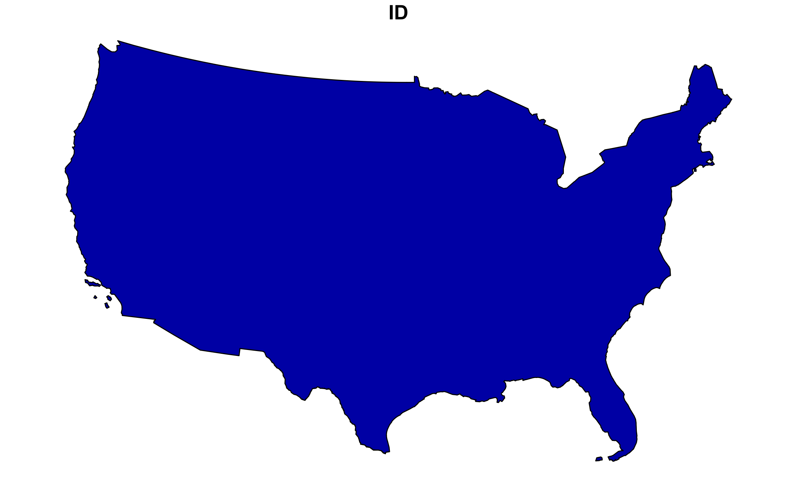
plot(triangulate_conus)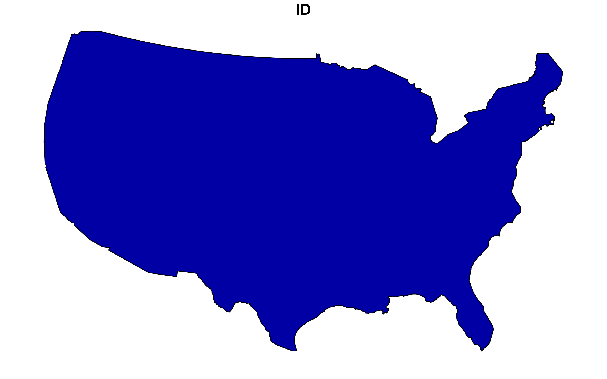
plot(grid_conus)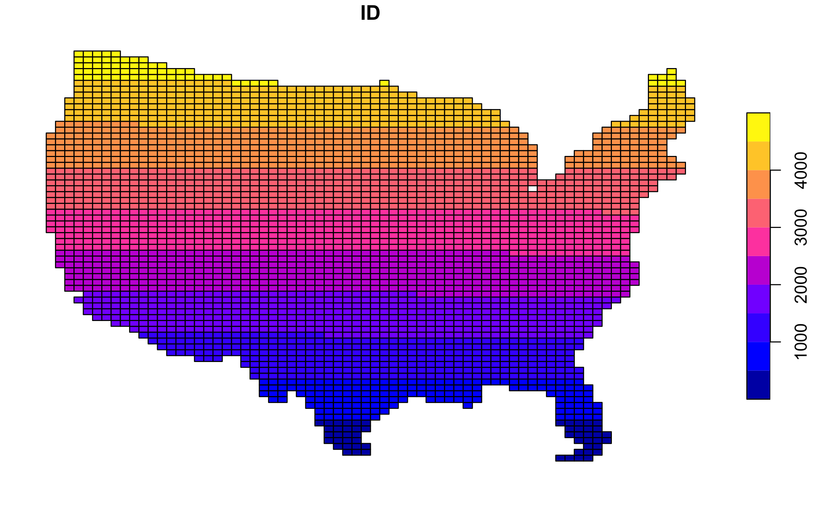
plot(hexagon_conus)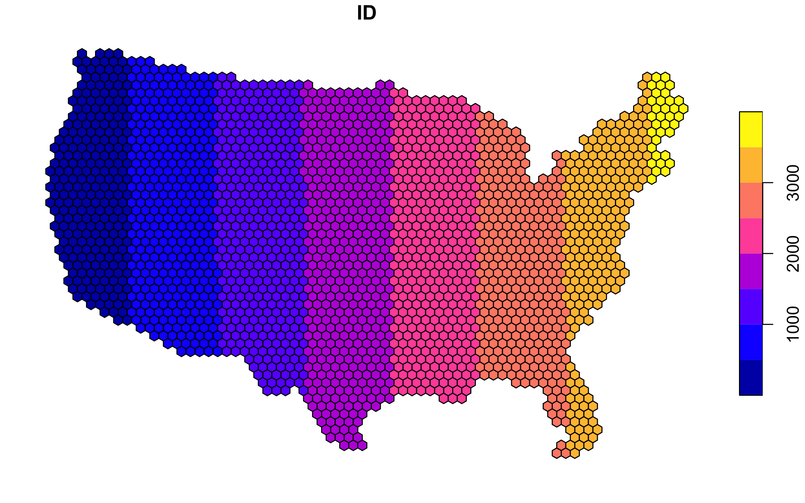
plot(us_counties)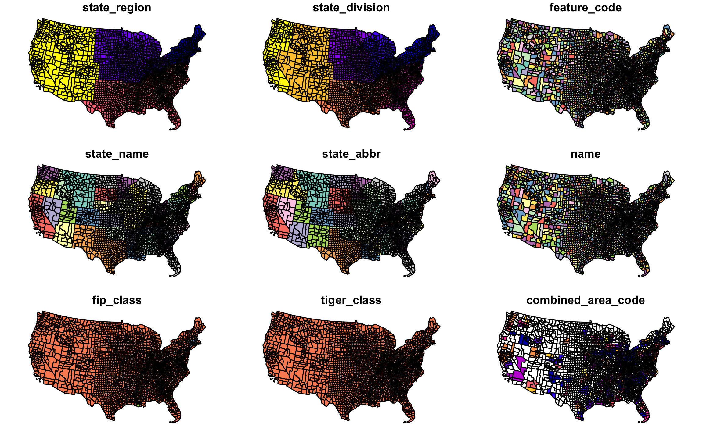
#The plots vary in accuracy due to the simplification of the conus boundary, specifically with the Voronoi and Triangulation plots.Question 2:
In this question, we will write out a function to summarize our tessellated surfaces.
Step 2.1
First, we need a function that takes a sf object and a character string and returns a data.frame.
For this function:
The function name can be anything you chose, arg1 should take an
sfobject, and arg2 should take a character string describing the objectIn your function, calculate the area of
arg1; convert the units to km2; and then drop the unitsNext, create a
data.framecontaining the following:text from arg2
the number of features in arg1
the mean area of the features in arg1 (km2)
the standard deviation of the features in arg1
the total area (km2) of arg1
Return this
data.frame
tesselation_summary <- function(arg1, arg2) {
area_arg1 <- st_area(arg1) |>
set_units(km^2)
area_num <- drop_units(area_arg1)
summary_df <- data.frame(
description = arg2,
n_features = nrow(arg1),
mean_area_km2 = mean(area_num, na.rm = TRUE),
sd_area_km2 = sd(area_num, na.rm = TRUE),
total_area_km2 = sum(area_num, na.rm = TRUE),
stringsAsFactors = FALSE)
return(summary_df)
}Step 2.2
Use your new function to summarize each of your tessellations and the original counties.
tesselation_summary(voronoi_conus, "Voronoi Tessellation") description n_features mean_area_km2 sd_area_km2 total_area_km2
1 Voronoi Tessellation 1 8089628 NA 8089628tesselation_summary(triangulate_conus, "Delaunay Triangulation") description n_features mean_area_km2 sd_area_km2 total_area_km2
1 Delaunay Triangulation 1 7994054 NA 7994054tesselation_summary(grid_conus, "Square Grid") description n_features mean_area_km2 sd_area_km2 total_area_km2
1 Square Grid 3129 2761.289 2.121584e-11 8640072tesselation_summary(hexagon_conus, "Hexagonal Grid") description n_features mean_area_km2 sd_area_km2 total_area_km2
1 Hexagonal Grid 2308 3781.179 1.647295e-11 8726961tesselation_summary(us_counties, "Original County Data") description n_features mean_area_km2 sd_area_km2 total_area_km2
1 Original County Data 3108 2605.05 3443.712 8096496Step 2.3
Multiple data.frame objects can bound row-wise with bind_rows into a single data.frame
For example, if your function is called sum_tess, the following would bind your summaries of the triangulation and voroni object.
bound_summary <- bind_rows(
tesselation_summary(triangulate_conus, "Delaunay Triangulation"),
tesselation_summary(voronoi_conus, "Voronoi Tessellation"),
tesselation_summary(hexagon_conus, "Hexagonal Grid"),
tesselation_summary(grid_conus, "Square Grid"),
tesselation_summary(us_counties, "Original County Data")
)Step 2.4
Once your 5 summaries are bound (2 tessellations, 2 coverage’s, and the raw counties) print the data.frame as a nice table using knitr/kableExtra/flextable or your preferred table formatting package.
Geometry Type | Feature Count | Mean Area (km²) | SD Area | Total Area (km²) |
|---|---|---|---|---|
Delaunay Triangulation | 1 | 7,994,054.30 | N/A | 7,994,054.30 |
Voronoi Tessellation | 1 | 8,089,628.30 | N/A | 8,089,628.30 |
Hexagonal Grid | 2,308 | 3,781.18 | 0.00 | 8,726,960.83 |
Square Grid | 3,129 | 2,761.29 | 0.00 | 8,640,071.76 |
Original County Data | 3,108 | 2,605.05 | 3,443.71 | 8,096,495.51 |
Step 2.5
Comment on the traits of each tessellation. Be specific about how these traits might impact the results of a point-in-polygon analysis in the contexts of the modifiable areal unit problem and with respect computational requirements.
The delaunay triangulation and voronoi tesselation both only have a feature count of 1, whereas the hexagonal grid, square grid, and original county data have higher feature counts but cover a smaller total mean area. This may result in errors downstream since point-in-polygon analysis allows you to understand how many points fall within a certain polygon.
Question 3: Dam Distribution Analysis & Tessellation Selection
The data we will analyze in this lab are from the U.S. Army Corps of Engineers National Dam Inventory (NID). This dataset documents ~91,000 dams in the United States and includes attributes such as design specifications, risk level, age, and purpose.
Dam management agencies face a critical question: Where are dams actually clustered, and how do I visualize that clustering in a way that supports infrastructure planning decisions? The answer depends on your choice of geographic boundaries—that is, your tessellation. Different tessellations will reveal different patterns of dam concentration. Your job in this question is to:
- Quantify dam distributions across multiple tessellation methods
- Understand how the modifiable areal unit problem (MAUP) creates different narratives from the same underlying data
- Select and justify the tessellation that best supports management decisions about dam clustering
For the remainder of this lab we will analyze the distributions of these dams using point-in-polygon analysis.
Step 3.1
In the tradition of this class - and true to data science/GIS work - you need to find, download, and manage raw data. THe NID dataset is available as a CSV download from the USACE website here. Grab the CSV.
- Return to your RStudio Project and read the data in using the
readr::read_csv- Use
janitor::clean_names()to standardize column names to snake_case (tidy data convention) - After reading the data in, be sure to remove rows that don’t have location values (
!is.na()) - Convert the
data.frameto asfobject by defining the coordinates and CRS - Transform the data to a CONUS AEA (EPSG:5070) projection - matching your tessellation
- Filter to include only those within your CONUS boundary
- Use
Data Cleaning with janitor
The NID CSV has messy column names (all caps with spaces). The janitor::clean_names() function converts them to clean snake_case (LONGITUDE → longitude, DAM NAME → dam_name). This is a lightweight utility that saves time and prevents typos in downstream code. It’s part of data wrangling best practice.
# Prefer a local NID CSV named `nation.csv`; otherwise download to that filename
nid_url <- "https://nid.sec.usace.army.mil/api/nation/csv"
dir.create("data", showWarnings = FALSE)
nid_dest <- "data/nation.csv"
if (file.exists(nid_dest)) {
message("Using local NID file: ", nid_dest)
} else {
tryCatch({
message("Downloading NID CSV to: ", nid_dest)
download.file(nid_url, nid_dest, quiet = FALSE, mode = "wb")
}, error = function(e) {
message("NID download failed: ", e$message)
})
}
# read the CSV (will error if download failed and file missing)
if (!file.exists(nid_dest)) stop("NID CSV not found at ", nid_dest)
dams <- readr::read_csv(nid_dest, skip =1, show_col_types = FALSE) |>
janitor::clean_names()
usa <- AOI::aoi_get(state = "conus") %>%
st_union() %>%
st_transform(5070)
dams2 <- dams %>%
filter(!is.na(latitude)) %>%
st_as_sf(coords = c("longitude", "latitude"), crs = 4326) %>%
st_transform(5070) %>%
st_filter(usa)Step 3.2
Following the in-class examples develop an efficient point-in-polygon function that takes:
- points as
arg1, - polygons as
arg2, - The name of the id column as
arg3
The function should make use of spatial and non-spatial joins, sf coercion and dplyr::count. The returned object should be input sf object with a column - n - counting the number of points in each tile.
Point-in-Polygon Function Design Notes
CRS Matching: Ensure
pointsandpolygonsare in the same CRS before callingst_join(). If they differ, usest_transform()to align them first.Empty Polygons:
st_join(...) %>% count(id)creates one row per intersection found. Polygons with zero intersections will appear in the result withn = 0only if you use a left join (default forst_join()). If a polygon has no points, make sure your result still includes it; if not, usest_join(...) %>% right_join(...)or initialize counts explicitly.Sparse vs. Dense Matrices: In this step you’re not creating matrices. However, in Q6.1 you’ll use
st_touches(..., sparse = FALSE)to build neighbor matrices explicitly. Here in Q3,st_join()handles the spatial predicate internally (st_intersectsby default), so you won’t set sparsity—just know thatst_join()scales well to large datasets. For troubleshooting performance: if your function runs slowly with 91,000 dams, check whether your tessellation polygons are topologically simple (usest_is_valid()).
pip_dams <- function(points, polygons, id_col) {
st_geometry(points) <- "geometry"
st_geometry(polygons) <- "geometry"
if (st_crs(points) != st_crs(polygons)) {
points <- st_transform(points, st_crs(polygons))}
points_minimal <- points |> select(geometry)
points_join <- st_join(points_minimal, polygons, join = st_intersects,
left = FALSE) |>
st_drop_geometry() |>
count(.data[[id_col]], name = "n")
polygons_join <- polygons |>
left_join(points_join, by = id_col) |>
mutate(n = replace_na(n, 0))
return(polygons_join)
}Step 3.3
Apply your point-in-polygon function to each of your five tessellated surfaces where:
- Your points are the dams
- Your polygons are the respective tessellation
- The id column is the name of the id columns you defined.
voronoi_pip <- pip_dams(dams2, voronoi_conus, id_col = "ID")
triangulate_pip <- pip_dams(dams2, triangulate_conus, id_col = "ID")
hexagon_pip <- pip_dams(dams2, hexagon_conus, id_col = "ID")
grid_pip <- pip_dams(dams2, grid_conus, id_col = "ID")
counties_pip <- pip_dams(dams2, us_counties, id_col = "fip_code")Step 3.4
Lets continue the trend of automating our repetitive tasks through function creation. This time make a new function that extends your previous plotting function.
For this function:
The name can be anything you chose, arg1 should take an
sfobject, and arg2 should take a character string that will title the plotThe function should also enforce the following:
the fill aesthetic is driven by the count column
nthe col is
NAthe fill is scaled to a continuous
viridiscolor ramptheme_voida caption that reports the number of dams in arg1 (e.g.
sum(n))- You will need to paste character stings and variables together.
dam_plots <- function(obj, title){
dam_n <- sum(obj$n, na.rm = TRUE)
caption <- paste0("Number of dams: ", format(dam_n))
ggplot(data = obj)+
geom_sf(aes(fill = n))+
scale_fill_viridis_c(option = "viridis", "Number of dams")+
theme_void()
}Step 3.5
Apply your plotting function to each of the 5 tessellated surfaces with Point-in-Polygon counts:
voronoi_dam <- dam_plots(voronoi_pip, "Voronoi Tesselation of dams")
triangulate_dam <- dam_plots(triangulate_pip, "Triangulation Tesselation of dams")
hex_dam <- dam_plots(hexagon_pip, "Hexagonal Tessellation of dams")
grid_dam <- dam_plots(grid_pip, "Grid Tesselation of dams")
counties_dam <- dam_plots(counties_pip, "County-Level dams")Step 3.6
Policy Analysis: Tessellation and Decision-Making
Now that you have dam counts across all five tessellation methods, compare the results. Specifically:
a. Create a side-by-side visualization (faceted or small multiples) showing dam clustering under each of the five tessellations. Use patchwork or cowplot to arrange the 5 plots you created in Step 3.5 for direct visual comparison.
(voronoi_dam | triangulate_dam) / (hex_dam | grid_dam | counties_dam)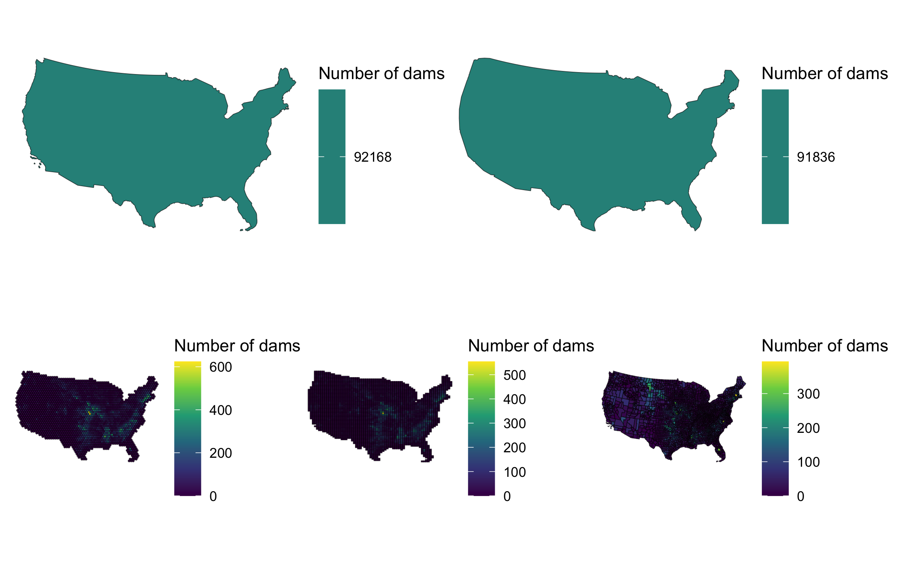
b. Identify 2–3 geographic regions where tessellation choice produces substantially different patterns (e.g., one method shows a clear hotspot while another shows diffuse distribution). For each region, describe the pattern difference and explain why the tessellation geometry creates divergent results. Reference the characteristics from your Q2 summary (number of tiles, mean area, standard deviation).
The counties vs grid and hexagon maps show a difference in dam distribution. The grid and hexagon maps indicate that a high density of dams are found in middle america whereas the counties map indicates more of a diffuse spread with additional hot spots on the east coast and near Montana/Wyoming/Colorado. This is likely due to the fact that tiles are weighted differently between those three maps which causes more of a weight to a certain county than it would have if it were a square or hexagon due to the area per tile.
c. Which single tessellation would you recommend to a dam operations manager seeking to understand geographic clustering? Justify your choice by addressing: - Does the tessellation align with natural or management decision-making units (e.g., river basins, states, hydrologic regions)? - Does it reveal meaningful patterns without over-fragmenting the landscape or creating artificial boundaries? - How does MAUP influence your recommendation—are other tessellations equally valid, just for different questions? - How did simplification affect your choice? Would a coarser or finer simplification (different keep percentage) change your recommendation? - What does “best supports management decisions” mean concretely in your context—does it matter more that hot spots are obvious, or that boundaries align with jurisdictions?
I would recommend a dam operations manger use the hexagon tessellation map because it provides a clearer projection of the number of dams per area covered. Since the hexagons are uniform, unlike the counties map, it provides a better understanding of the areas where dams are concentrated, which is highly aligned with the Mississippi River. Though this map creates a simplification of the area covered by using the hexagons compared to the grid map, which has smaller tiles, it provides clearer boundaries.
The counties map provides easy boundary markers which could be beneficial when considering workforce allocation, budgetary limitations, or regulatory differneces by local governments since this can highly impact management approaches. The main downfall, as discussed in the previous question, is that it oversimplifies the scale used because county size is not uniform which causes hot spots in areas that simply have larger county sizes.
Your answer should be 3–4 paragraphs and grounded in the actual visualizations and patterns you observe from your tessellation comparisons.
Question 4
The NID provides a comprehensive data dictionary here. In it we find that dam purposes are designated by a character code.
These are shown below for convenience (built using knitr on a data.frame called nid_classifier):
| abbr | purpose |
|---|---|
| I | Irrigation |
| H | Hydroelectric |
| C | Flood Control |
| N | Navigation |
| S | Water Supply |
| R | Recreation |
| P | Fire Protection |
| F | Fish and Wildlife |
| D | Debris Control |
| T | Tailings |
| G | Grade Stabilization |
| O | Other |
In the data dictionary, we see a dam can have multiple purposes.
In these cases, the purpose codes are concatenated in order of decreasing importance. For example,
SCRwould indicate the primary purposes are Water Supply, then Flood Control, then Recreation.A standard summary indicates there are over 400 unique combinations of dam purposes:
unique(dams2$purposes) %>% length()[1] 574#note: "PURPOSES" was used in the inital write up but purposes is correct and changed throughout- By storing dam codes as a concatenated string, there is no easy way to identify how many dams serve any one purpose… for example where are the hydro electric dams?
- No, the concatenated string data structure makes it difficult to view this information.
To overcome this data structure limitation, we can identify how many dams serve each purpose by splitting the PURPOSES values (strsplit) and tabulating the unlisted results as a data.frame. Effectively this is double/triple/quadruple counting dams bases on how many purposes they serve:
The result of this would indicate:
Step 4.1
Your task is to create point-in-polygon counts for at least 4 of the above dam purposes:
You will use
greplto filter the complete dataset to those with your chosen purposeRemember that
greplreturns a boolean if a given pattern is matched in a stringgreplis vectorized so can be used indplyr::filter
For example:
# Find flood control dams in the first 5 records:
dams2$purposes[1:5][1] "Recreation" "Recreation" "Other" "Other" "Water Supply"grepl("F", dams2$purposes[1:5])[1] FALSE FALSE FALSE FALSE FALSEFor your analysis, choose at least four of the above codes, and describe why you chose them. Then for each of them, create a subset of dams that serve that purpose using dplyr::filter and grepl
Finally, use your point-in-polygon function to count each subset across your cropped tessellation from Q1.4 (e.g., hexagon_clipped or square_clipped).
#chosen codes: R, F, S, and C since these were the codes with the highest number of dams associated
recreation_dams <- dams2 |>
filter(grepl("R", purposes))
fish_dams <- dams2 |>
filter(grepl("F", purposes))
supply_dams <- dams2 |>
filter(grepl("S", purposes))
flood_dams <- dams2 |>
filter(grepl("C", purposes))
recreation_pip <- pip_dams(recreation_dams, hexagon, id_col = "ID")
fish_pip <- pip_dams(fish_dams, hexagon, id_col = "ID")
supply_pip <- pip_dams(supply_dams, hexagon, id_col = "ID")
flood_pip <- pip_dams(flood_dams, hexagon, id_col = "ID")Step 4.2
Now use your plotting function from Q3 to map these counts on the cropped tessellation.
But! you will use
gghighlightto only color those tiles where the count (n) is greater then the (mean + 1 standard deviation) of the setSince your plotting function returns a
ggplotobject already, thegghighlightcall can be added “+” directly to the function.The result of this exploration is to highlight the areas of the country with the most
p_recreaction <- dam_plots(recreation_pip) +
gghighlight(n > (mean(n) + sd(n))) +
labs(title = "Recreation")
p_fish <- dam_plots(fish_pip) +
gghighlight(n > (mean(n) + sd(n))) +
labs(title = "Fish and Wildlife")
p_supply <- dam_plots(supply_pip) +
gghighlight(n > (mean(n) + sd(n))) +
labs(title = "Water Supply")
p_flood <- dam_plots(flood_pip) +
gghighlight(n > (mean(n) + sd(n))) +
labs(title = "Flood Control")
(p_recreaction | p_fish) / (p_supply | p_flood)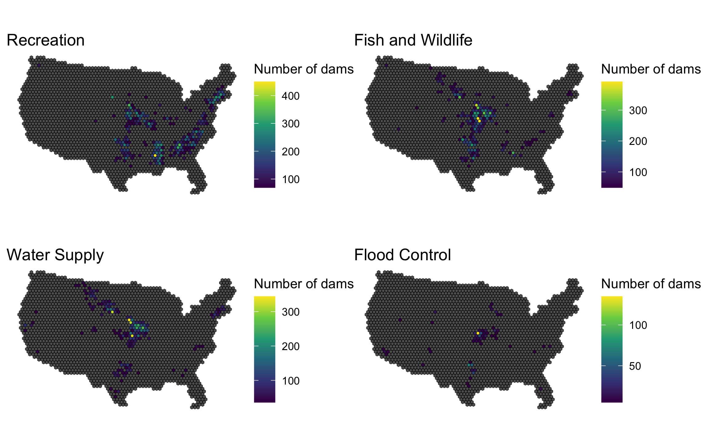
Step 4.3
Comment on the geographic distribution of dams you found. Does it make sense? How might the tessellation you chose impact your findings? How does the distribution of dams coincide with other geographic factors such as river systems, climate, ect?
The dam distribution maps for fish and wildlife and water supply present very similar spreads, with hot spots in the middle of the US from roughly Montana through the midwest and down into Texas. This pattern likely aligns with water needs for crops and would likely align with the irrigation map if that variable was analyzed. The recreation map has many hotspots along the eastern seaboard and through the midwest as well, which is expected due to the high water availability for recreation in those regions. Finally, the hot spots for the flood control map are primarily in an area that aligns with the Mississippi River.
Optional: Connect to Q6 — For purposes you chose in Q4, hypothesize in 1–2 sentences: “Will [irrigation/hydroelectric] dams show the same LISA hotspots as all dams in Q6, or different patterns? Why?” After completing Q6, revisit this hypothesis.
Question 5: Spatial Correlation of Dam Attributes — Introduction to Spatial Regression
Dam characteristics—such as age, surface area, storage capacity, and purpose—vary geographically. Understanding the spatial structure of these relationships is foundational to spatial regression modeling (upcoming topics). In this question, you’ll examine whether dam attributes exhibit spatial dependence and assess whether neighboring tiles have correlated characteristics.
Spatial Regression Motivation (Week 3-1 Foundation)
Standard regression assumes observations are independent. But spatial data often violates this: dams in the Pacific Northwest likely share design and management practices, leading to spatially correlated residuals. This spatial dependence can bias confidence intervals and inflate significance tests in standard OLS regression.
The solution involves spatial lag models (Spatial Autoregressive, SAR) or spatial error models (SEM) that explicitly model dependence via neighbor relationships. This lab asks: Do your tessellation neighborhoods reveal spatial structure in dam attributes?
For this question, use your cropped tessellation from Q1.4 (your recommended tessellation from Q3, clipped to the CONUS boundary). You’ll examine whether dam attributes (age, size, count) are spatially autocorrelated—evidence that neighboring tiles have similar values, violating independence assumptions.
Step 5.1
Aggregate Dam Attributes by Tile
Using your cropped tessellation from Q1.4 (your recommended grid from Q3, clipped to CONUS boundary), compute mean and variance of key dam attributes within each tile. The NID dataset typically includes:
- Age:
year_completedor similar (compute mean age per tile) - Size:
surface_area_acresornormal_pool_elevation(compute mean per tile) - Purpose codes:
purposesfield (compute dominant purpose per tile; count of dams by purpose)
Aggregate as follows:
# Suggested workflow (write your own implementation):
# 1) spatial join dams to your cropped tessellation
# 2) group by tile id and summarize n_dams, mean_year_completed, mean_surface_area
# 3) join summaries back to geometry and preserve zero-dam tiles
# 4) inspect distributions before mappingProduce visualizations showing spatial patterns:
- Map 1: Mean dam age by tile (use viridis scale)
- Map 2: Mean surface area by tile
- Map 3: Dam count by tile (you already have this from Q3)
Do you see geographic clustering of old vs. new dams? Large vs. small dams?
dam_aggregate <- dams2 |>
st_join(hexagon_conus, join = st_intersects) |>
st_drop_geometry() |>
group_by(ID) |>
summarise(n = n(),
mean_year_completed = mean(year_completed, na.rm = TRUE),
mean_surface_area = mean(surface_area_acres, na.rm = TRUE),
.groups = "drop"
) |>
mutate(mean_age = 2026 - mean_year_completed) |>
right_join(hexagon_conus, by = "ID") |>
st_as_sf()
map1 <- ggplot(dam_aggregate) +
geom_sf(aes(fill = mean_age), color = NA) +
scale_fill_viridis_c(option = "viridis", name = "Years") +
theme_void() +
labs(title = "Mean Dam Age by Tile")
map2 <- ggplot(dam_aggregate) +
geom_sf(aes(fill = mean_surface_area), color = NA) +
scale_fill_viridis_c(option = "viridis", name = "Acres",
trans = "log10") +
theme_void() +
labs(title = "Mean Surface Area by Tile (log scale)")
hex_dam <- dam_plots(hexagon_pip, "Hexagonal Tessellation of dams")
(map1)|(map2)|(hex_dam)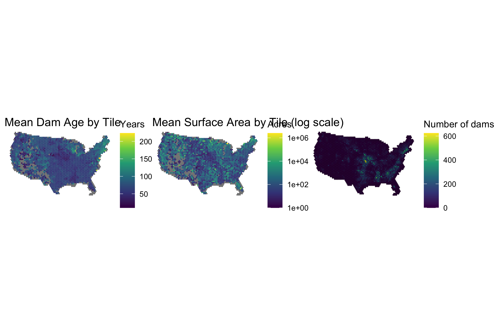
Step 5.2
Neighbor Correlation: Local Spatial Variation
For your tessellation’s neighbor matrix (from Q6), compute the spatial lag of dam attributes: the average value of an attribute in a tile’s neighbors. This reveals whether spatial neighbors have similar dam attributes—a key signal that observations are not independent (violating OLS assumptions).
Critical: NA Handling in Spatial Lag Calculations
Many tiles may have zero dams (NAs for attributes like mean_year_completed, mean_surface_area). When you compute the spatial lag via matrix multiplication, these NAs propagate and can cause cor() to fail with “no complete element pairs.”
Solution: Impute before spatial lag calculation
- Replace NAs in the attribute with the global mean (mean across all tiles, ignoring NAs)
- Compute the spatial lag on the imputed data
- When correlating, use only tiles that had original data (not imputed)
This preserves statistical integrity: neighbors’ contributions are computed correctly, but you only correlate where real observations exist.
# Suggested workflow (write your own implementation):
# 1) build vectors for count, age, and size attributes by tile
# 2) handle NAs explicitly before matrix multiplication
# 3) compute spatial lag as W_std %*% attribute
# 4) correlate each attribute with its lag
# 5) report values and classify as weak/moderate/strong with your own thresholdsSummarize in a table:
# Create a compact summary table with:
# - attribute name
# - correlation with spatial lag
# - qualitative strength label
# Then add a 1-2 sentence interpretation below the table.standardize_weights <- function(geometry_sf) {
# Check validity
if (any(!st_is_valid(geometry_sf))) {
geometry_sf <- st_make_valid(geometry_sf)
}
# Binary neighbor matrix
W <- st_touches(geometry_sf, sparse = FALSE)
diag(W) <- 0 # Remove self-neighbors
# Row-standardize (handles isolated tiles)
W_std <- W / rowSums(W)
W_std[rowSums(W) == 0, ] <- 0 # Replace NaN (no neighbors) with 0
return(W_std)
}
W_std <- standardize_weights(dam_aggregate)
W_std_county <- standardize_weights(counties_pip)
compute_spatial_lag <- function(attribute_vector, weight_matrix,
original_na_mask = NULL) {
if (is.null(original_na_mask)) {
original_na_mask <- is.na(attribute_vector)
}
global_mean <- mean(attribute_vector, na.rm = TRUE)
attribute_imputed <- ifelse(is.na(attribute_vector),
global_mean,
attribute_vector)
spatial_lag <- weight_matrix %*% attribute_imputed
spatial_lag <- as.vector(spatial_lag)
return(list(
lag = spatial_lag,
imputed = attribute_imputed,
na_mask = original_na_mask
))
}
# Dam count (n has no NAs — zeros for empty tiles, not NA)
lag_result_n <- compute_spatial_lag(dam_aggregate$n, W_std)
# Mean year completed (NA where tile has no dams)
lag_result_year <- compute_spatial_lag(dam_aggregate$mean_year_completed, W_std)
# Mean surface area (NA where tile has no dams)
lag_result_area <- compute_spatial_lag(dam_aggregate$mean_surface_area, W_std)
# Correlation for each (use na_mask to exclude imputed values)
cor_count <- cor(lag_result_n$imputed, lag_result_n$lag, use = "complete.obs")
cor_age <- cor(lag_result_year$imputed[!lag_result_year$na_mask],
lag_result_year$lag[!lag_result_year$na_mask], use = "complete.obs")
cor_size <- cor(lag_result_area$imputed[!lag_result_area$na_mask],
lag_result_area$lag[!lag_result_area$na_mask], use = "complete.obs")
lag_result <- compute_spatial_lag(dam_aggregate$n, W_std)
lag_tess <- lag_result$lag
n_imputed <- lag_result$imputed
na_mask <- lag_result$na_mask
cor_value <- cor(lag_result$imputed[!lag_result$na_mask], lag_result$lag[!lag_result$na_mask], use = "complete.obs")
lag_county <- compute_spatial_lag(counties_pip$n, W_std_county)
#The correlation value is 0.824 which indicates that there is a strong correlation with neighboring tiles classify_moran <- function(r) {
abs_r <- abs(r)
case_when(abs_r >= 0.5 ~ "Strong",
abs_r >= 0.3 ~ "Moderate",
abs_r >= 0.1 ~ "Weak",
TRUE ~ "Negligible")
}
lag_summary <- tibble(Attribute = c("Dam Count", "Mean Dam Age", "Mean Surface Area"),
Correlation = round(c(cor_count, cor_age, cor_size), 3),) |>
mutate(Strength = classify_moran(Correlation))
lag_summary |>
knitr::kable( col.names = c("Attribute", "Spatial Lag Correlation", "Strength"),
caption = "Spatial Lag Correlations for Dam Attributes") |>
kableExtra::kable_styling("striped", full_width = TRUE, font_size = 14)| Attribute | Spatial Lag Correlation | Strength |
|---|---|---|
| Dam Count | 0.811 | Strong |
| Mean Dam Age | 0.637 | Strong |
| Mean Surface Area | 0.001 | Negligible |
#The data indicates that the spatial lag correlation is negligible for the mean surface area but is has a strong correlation for dam count and mean dam age. This indicates that spatial neighbors in the dam count data have similar attributes to one another.Step 5.3
Global Question: Do neighboring tiles resemble each other overall, or is the pattern weak?
Create a single Moran’s I scatterplot for one dam attribute from Step 5.2 (for example, mean year completed or dam count). Use standardized values on both axes: the attribute on the x-axis and the spatial lag on the y-axis. The plot should show whether points concentrate along the diagonal or remain widely dispersed.
Your interpretation should focus on the overall pattern, not on specific regions. In particular, explain whether the correlation from Step 5.2 suggests strong, moderate, or weak spatial dependence and whether the scatterplot supports that conclusion.
Do not create a geographic map here. Save local hotspot mapping for Q6.
Standardization Details
Why standardize? Centering and scaling puts the attribute and spatial lag on the same scale (mean=0, SD=1), making it easy to identify quadrants and interpret outliers.
scale(x, center=TRUE, scale=TRUE)[, 1]Returns a numeric vector (not a matrix). Use [, 1] to extract it, or use as.vector() explicitly.
# Suggested workflow (write your own implementation):
# 1) standardize the selected attribute and its spatial lag
# 2) assign HH / LL / HL / LH quadrants by sign of (z, lag_z)
# 3) produce a Moran scatterplot with dashed axes at 0
# 4) report quadrant counts and interpret what dominatesassign_lisa_quadrants <- function(attribute_vector, spatial_lag_vector) {
# Standardize both
z_attr <- as.vector(scale(attribute_vector))
z_lag <- as.vector(scale(spatial_lag_vector))
# Assign quadrants
quadrant <- case_when(
z_attr > 0 & z_lag > 0 ~ "HH",
z_attr < 0 & z_lag < 0 ~ "LL",
z_attr > 0 & z_lag < 0 ~ "HL",
z_attr < 0 & z_lag > 0 ~ "LH",
TRUE ~ NA_character_
)
return(list( z_attr = z_attr, z_lag = z_lag, quadrant = quadrant))
}
lag_result <- lag_result_n # or lag_result_year / lag_result_area
lisa_result <- assign_lisa_quadrants(lag_result$imputed, lag_result$lag)
moran_data <- data.frame(
z = lisa_result$z_attr,
lag_z = lisa_result$z_lag,
quad = lisa_result$quadrant
)
plot_lisa_map <- function(geometry_sf, title = "LISA Map") {
lisa_colors <- c("HH" = "#d73027", "LL" = "#4575b4", "HL" = "#fee090", "LH" = "#91bfdb")
ggplot(geometry_sf) +
geom_sf(aes(fill = lisa), color = NA) +
scale_fill_manual(values = lisa_colors, na.value = "gray90") +
labs(title = title) +
theme_void() +
theme(legend.position = "bottom")
}assign_lisa_quadrants <- function(attribute_vector, spatial_lag_vector) {
# Standardize both
z_attr <- as.vector(scale(attribute_vector))
z_lag <- as.vector(scale(spatial_lag_vector))
# Assign quadrants
quadrant <- case_when(
z_attr > 0 & z_lag > 0 ~ "HH",
z_attr < 0 & z_lag < 0 ~ "LL",
z_attr > 0 & z_lag < 0 ~ "HL",
z_attr < 0 & z_lag > 0 ~ "LH",
TRUE ~ NA_character_
)
return(list( z_attr = z_attr, z_lag = z_lag, quadrant = quadrant))
}
point_in_polygon = function(points, polygon, var){
st_join(polygon, points) |>
st_drop_geometry() |>
count(get(var)) |>
setNames(c(var, "n")) |>
left_join(polygon, by = var) |>
st_as_sf()
}
tess_counts <- point_in_polygon(dams2, hexagon_conus, "ID")
lisa_result_county <- assign_lisa_quadrants(counties_pip$n, lag_county$lag)
counties_pip$lisa <- lisa_result_county$quadrant
lag_n <- compute_spatial_lag(dam_aggregate$n, W_std)
lisa_count <- assign_lisa_quadrants(lag_n$imputed, lag_n$lag)
lisa_age <- assign_lisa_quadrants(lag_result_year$imputed, lag_result_year$lag)
lisa_size <- assign_lisa_quadrants(lag_result_area$imputed, lag_result_area$lag)
moran_data <- data.frame(
z = lisa_count$z_attr,
lag_z = lisa_count$z_lag,
quad = lisa_count$quadrant
)
ggplot(moran_data, aes(x = z, y = lag_z, color = quad)) +
geom_point(size = 2, alpha = 0.6) +
geom_hline(yintercept = 0, linetype = "dashed", color = "gray") +
geom_vline(xintercept = 0, linetype = "dashed", color = "gray") +
scale_color_manual(values = c("HH" = "#d73027", "LL" = "#4575b4",
"HL" = "#fee090", "LH" = "#91bfdb"),
na.value = "gray80") +
labs(title = "Moran Scatterplot",
x = "Standardized attribute", y = "Standardized spatial lag",
color = "Quadrant") +
theme_minimal()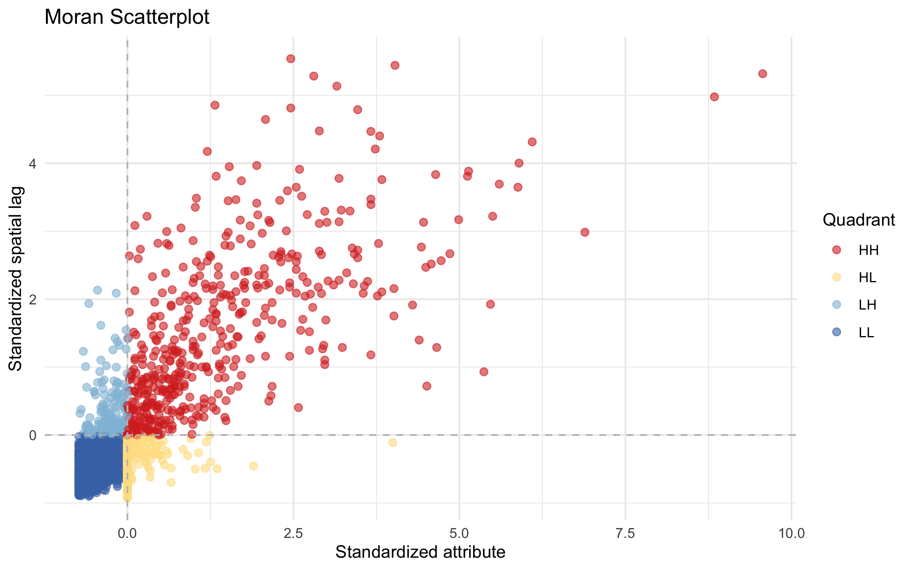
Step 5.4
Global Interpretation of Spatial Patterns
Writing Guide: Interpreting Spatial Correlation
Use this structure to organize your response:
- State your findings clearly — cite specific correlation values from your Step 5.2 table. Which attributes show the strongest clustering?
- Connect to structure — what does the scatterplot suggest about broad spatial organization, without moving into local mapping yet?
- Explain why — relate to dam history, geology, hydrology, or policy at the regional scale
- Analyze patterns — describe what the Moran scatterplot and correlation values reveal about overall dam distributions
Write 2–3 paragraphs (400–600 words) addressing:
a. Spatial Clustering Patterns (Quantitative + Geographic)
Which attributes show the strongest spatial lag correlations (from your Step 5.2 table)? Are correlations > 0.5 (strong) or 0.2–0.5 (moderate)?
- Dam count: Often strongly correlated because high dam density naturally creates neighbors with many dams.
- Dam age: Likely shows clustering if dams were built in regionally-coherent eras (e.g., 1930s TVA construction, 1960s–70s Western expansion).
- Dam size: May be clustered if geology/hydrology favors larger dams in specific regions.
For each attribute, describe whether the clustering seems broad or weak. Does the correlation make geographic sense? Why should dam characteristics be similar in neighboring areas?
b. Moran Scatterplot Interpretation (Visualization)
From your Moran scatterplot, describe the spatial distribution of points:
- Do points cluster near the diagonal, suggesting positive spatial autocorrelation?
- Are there many outliers away from the diagonal, suggesting weaker dependence or heterogeneous neighborhoods?
- Does the pattern appear stronger for some attributes than others?
c. Spatial Structure Implications
What do these correlation values and Moran scatterplot patterns tell us about dam infrastructure spatial organization? Given your findings, write a brief conclusion synthesizing: - Are neighboring tiles genuinely similar in dam characteristics, or is the clustering weak? - What management or hydrologic factors drive these patterns? - How do findings from your Moran analysis here compare to what you observed in Q4 (dam purposes geography)?
Note: In future weeks, we’ll explore how spatial structure revealed here relates to statistical modeling of dam attributes.
#The correlation data indicates that the dam count data shows the strongest correlation. The spatial correlation for that data is "strong", with a 0.84 spatial correlation value. The mean dam age and mean surface area values returned negligible strength due to issues with n/a values. The indication of a strong spatial lag correlation for dam count can be seen on the map developed in 5.1 which shows that there is a natural collection of dams concentrated around the Mississippi. This signal strenth is not see in the mean dam age map since there is no strong pattern showing many dams created in one area at the same time. Mean surface area also does not indicate strong signals which means that dam size is variable across the country.
#The moran scaatterplot shows a denser concentration of points in the low standardized spatial lag - low standardized attribute (LL) group which shows that there is likely a tight negative correlation with that group. This is also mostly true for the high standardized attribute - low standardized spatial lag (HL) group. The low standardized attribute - high standardized spatial lag (LH) group has more variability among points and indicates, but indicates a strong correlation. Finally, the high standardized attribute - high standardized spatial lag (HH) group has the most variability, indicating a positive corrlation that is weaker than the other groups.
#These results indicate correlation between dam count and neighboring tiles which is seen in the correlation values and in the 5.1 map. There are many dams built within a similar area, clustered around the mississippi and a few smaller hot spots focused around major streams. The results for the mean age and mean surface area are much weaker, which is not entirely surprising since dam infrastructure is more focused in one area. I was suspecting that there would be a tighter correlation for mean age in some areas since I would assume certian dam projects for one area would be funded tangetially. Overall, these findings are similar to those noted in Q4 but provide a much clearer picutre for how tighly these characteristics are correlated.Step 5.5 (Optional) — Hypothesis Checkpoint
Before moving to Q6, answer this question to verify your understanding:
Given your correlation results from Step 5.2, what do you expect to see in a Moran scatterplot (Q6)?
- If all correlations are > 0.5: Do you expect most points to cluster in the upper-right (HH) and lower-left (LL) quadrants, or scattered across all four?
- If correlations are weak (< 0.3): Would you expect many High-Low or Low-High outliers?
- Based on dam geography (e.g., TVA region, Colorado River Basin), where do you predict hotspots (HH) and coldspots (LL) will concentrate?
Write 2–3 sentences predicting Q6 outcomes before you compute LISA. After Q6, revisit this prediction to see if reality matched your expectation.
Question 6: Local Spatial Autocorrelation (LISA) — Mapping Hotspots and Coldspots
In this question, you’ll analyze LISA using your recommended tessellation from Q3 AND counties as a required comparison unit. This contrast (regular tessellation vs administrative boundaries) reveals MAUP much more clearly than comparing two regular grids.
While global statistics like Moran’s I (Q5) test for clustering “on average,” spatial patterns are rarely uniform. Some regions have dense hotspots (e.g., TVA region with concentrated dam infrastructure), while others are sparse coldspots (remote areas, deserts). Local Indicator of Spatial Autocorrelation (LISA) decomposes global clustering into local patterns, revealing where hotspots and coldspots occur—critical for targeted management interventions.
In this question, you’ll compute LISA using your cropped recommended tessellation (from Q1.4) and CONUS counties as the alternative support. This gives a direct test of how local clustering changes when analysis units shift from equal-area tiles to administrative units.
LISA Concept (Week 3-1 Lectures)
LISA compares each tile’s standardized dam count (\(z_i\)) to the standardized spatial lag (\(\text{lag}_z\)):
\[\text{lag}_z = \frac{1}{w_i} \sum_{j \in N(i)} w_{ij} z_j\]
where neighbors \(j \in N(i)\) are adjacent tiles, and \(w_{ij}\) = row-standardized adjacency weight (1 if touching, 0 otherwise).
The resulting LISA quadrants reveal: - High-High (HH): High dam count, high-count neighbors → hotspot - Low-Low (LL): Low dam count, low-count neighbors → coldspot
- High-Low (HL): High count, low neighbors → potentially isolated cluster edge - Low-High (LH): Low count, high neighbors → potential anomaly or outlier
Step 6.1
Crop your tessellations to ensure consistent boundaries:
a. Use your recommended tessellation from Q3 (e.g., hexagon grid). Clip it to the CONUS boundary with st_filter(tessellation, boundary).
b. Use counties as the required alternative comparison unit (no extra clipping needed if your counties object is already CONUS-only).
c. For each clipped tessellation, recompute dam counts using point-in-polygon joining to ensure correct aggregation within the cropped geometry.
Cropping Tessellations Correctly
# Recommended tessellation (e.g., hexagon_grid)
hex_cropped <- st_filter(hexagon_grid, usa_boundary)
# Required comparison unit: counties (already CONUS)
county_units <- counties_sf
# Recompute dam counts on cropped grids
# (Use your point_in_polygon function or st_join + count pattern)
hex_dams <- st_join(hex_cropped, dams_sf) %>%
group_by(id) %>%
summarise(n = n(), .groups = "drop")
county_dams <- st_join(county_units, dams_sf) %>%
group_by(id) %>%
summarise(n = n(), .groups = "drop")Important: Cropping changes tile counts and boundary geometries. Re-aggregate dam counts after cropping to match the new tile geometry.
tess_counts <- point_in_polygon(dams2, hexagon_conus, "ID")
county_counts <- point_in_polygon(dams2, us_counties, "fip_code")Step 6.2
Compute neighbors and spatial lag for your recommended tessellation:
a. Create the binary neighbor adjacency matrix using st_touches(..., sparse = FALSE). Include only tiles within the cropped boundary.
W_neighbor <- standardize_weights(hexagon_conus)b. Remove self-neighbors: diag(W) <- 0
c. Row-standardize weights: divide each row by its sum, handling isolated tiles.
d. Compute spatial lag: \(\text{lag} = W_{\text{std}} \times \text{dam\_counts}\)
lag_n <- compute_spatial_lag(dam_aggregate$n, W_neighbor)e. Standardize both dam counts and spatial lag (z-score normalization).
z_counts <- as.vector(scale(lag_n$imputed))
z_lag <- as.vector(scale(lag_n$lag))
Validation Checkpoint (Optional but Recommended)
After computing the neighbor matrix, verify it’s valid:
# Check 1: Is the matrix symmetric? (for undirected adjacency)
all(W_neighbor == t(W_neighbor))
# Check 2: Are all rows row-standardized (divide by row sum)?
rowSums(W_neighbor) # Should all be 1 (or 0 for isolated tiles)
# Check 3: Are there isolated tiles (no neighbors)?
sum(rowSums(W_neighbor) == 0)
# If any isolated tiles, document how you'll handle them in spatial lag calculationStep 6.3
LOCAL Question: WHERE specifically are high-high, low-low, high-low, and low-high clusters? (Answer: Geographic map showing which regions belong to which quadrant)
Two Visualizations:
a) Moran Scatterplot (Reference): - Same as Q5, showing which tile belongs to which quadrant - Primarily for reference; the interesting insight is now geographic
b) LISA Geographic Map (PRIMARY OUTPUT): - Choropleth map of your tessellation colored by LISA quadrant - HH (red) = hotspots with hotspot neighbors → TVA region, Colorado Basin, etc. - LL (blue) = coldspots with coldspot neighbors → Great Basin, deserts, etc. - HL (yellow) = anomalies: high counts surrounded by sparse tiles (cluster edges) - LH (cyan) = anomalies: sparse tiles surrounded by high-count neighbors (rare)
Key Interpretation: The LISA map reveals which specific regions exhibit local clustering. This is actionable: dense regions need intensive management; sparse regions need different strategies. The quadrant distribution (% of tiles in HH vs. LL) reveals whether the landscape is dominated by hotspots, coldspots, or mixed.
lag_result_tess <- compute_spatial_lag(tess_counts$n, W_std)
lisa_result_tess <- assign_lisa_quadrants(lag_result_tess$imputed, lag_result_tess$lag)
tess_counts$z <- lisa_result_tess$z_attr
tess_counts$lag_z <- lisa_result_tess$z_lag
tess_counts$lisa <- lisa_result_tess$quadrant
# (a) Moran scatterplot
plot_lisa_map <- function(geometry_sf, title = "LISA Map") {
lisa_colors <- c("HH" = "red", "LL" = "blue", "HL" = "yellow", "LH" = "cyan")
ggplot(geometry_sf) +
geom_sf(aes(fill = lisa), color = NA) +
scale_fill_manual(values = lisa_colors, na.value = "gray90") +
labs(title = title) +
theme_void() +
theme(legend.position = "bottom")
}
p_scatter_tess <- ggplot(tess_counts, aes(x = z, y = lag_z, color = lisa)) +
geom_point(size = 2, alpha = 0.6) +
geom_hline(yintercept = 0, linetype = "dashed", color = "gray") +
geom_vline(xintercept = 0, linetype = "dashed", color = "gray") +
scale_color_manual(values = c("HH" = "#d73027", "LL" = "#4575b4",
"HL" = "#fee090", "LH" = "#91bfdb"),
na.value = "gray80") +
labs(title = "LISA Scatter (Tessellation)",
x = "Standardized count", y = "Standardized lag", color = "Quadrant") +
theme_minimal()
# (b) LISA geographic map
p_map_tess <- plot_lisa_map(tess_counts, "LISA Map (Tessellation)")
p_scatter_tess + p_map_tess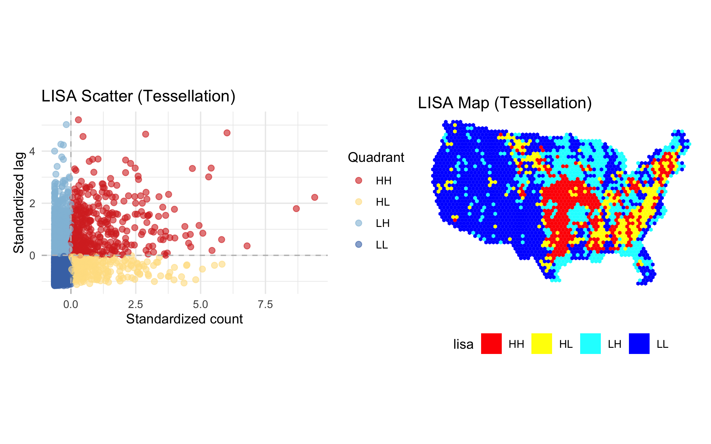
Step 6.4
Comparison with required county baseline:
a. Repeat Steps 6.2–6.3 for counties.
b. REQUIRED DELIVERABLE: Create side-by-side LISA maps of your chosen tessellation (from Q3) and counties in the same figure. Use identical quadrant labels and color mapping in both panels so visual differences reflect unit choice, not styling.
c. Quantitative comparison: For both units, count the number of polygons in each quadrant. Example output: - Hexagon: HH=15 tiles, LL=23 tiles, HL=5 tiles, LH=2 tiles - Counties: HH=205 counties, LL=1300 counties, HL=240 counties, LH=360 counties - Interpretation: Are quadrant distributions similar (robust LISA pattern) or different (MAUP sensitive at local scale)?
d. Interpret: Which unit reveals clustering more clearly for your purpose? Do patterns align between your chosen tessellation and counties, or does MAUP (modifiable areal unit problem) create divergent local structure?
lag_result_county <- compute_spatial_lag(county_counts$n, W_std_county)
lisa_result_county <- assign_lisa_quadrants(lag_result_county$imputed,
lag_result_county$lag)
county_counts$z <- lisa_result_county$z_attr
county_counts$lag_z <- lisa_result_county$z_lag
county_counts$lisa <- lisa_result_county$quadrant
p_tess <- plot_lisa_map(tess_counts, "LISA Map (Hexagon Tessellation)")
p_county <- plot_lisa_map(county_counts, "LISA Map (Counties)")
p_tess + p_county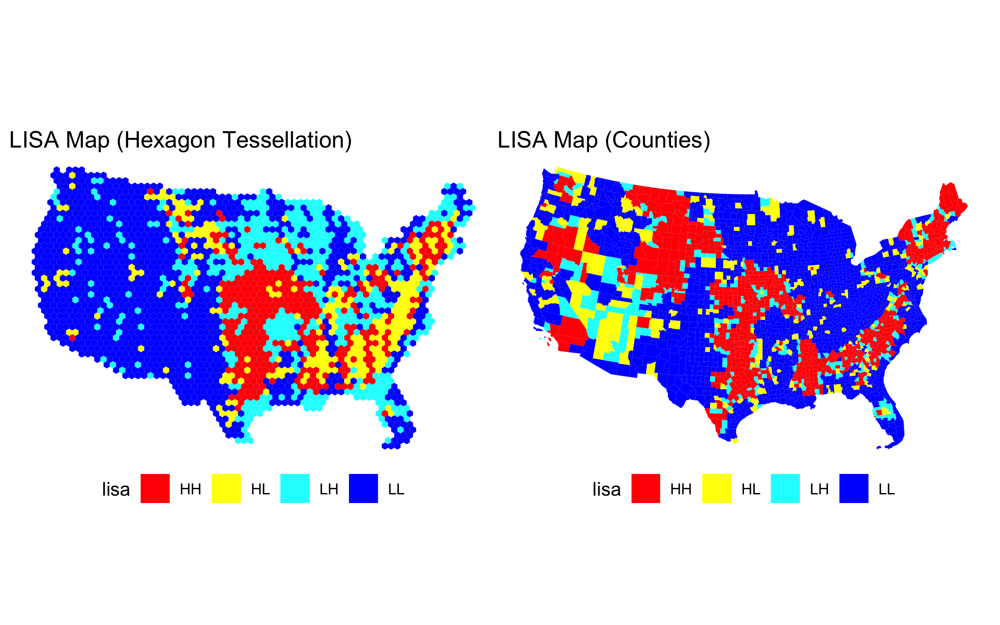
list(tessellation = tess_counts |>
st_drop_geometry() |>
count(lisa),
counties = county_counts |>
st_drop_geometry() |>
count(lisa))$tessellation
lisa n
1 HH 373
2 HL 263
3 LH 521
4 LL 1151
$counties
lisa n
1 HH 756
2 HL 232
3 LH 317
4 LL 1803#There are a higher number of tiles for each group in the counties data which is understandable since the county geometry covers larger areas in less populated spacees. There will generally be more counties in a more densely populated area which is also more likely to have increased infrastructure. The hexagon tessellation is still preferred over the county tesselation since each tile accounts for the same area of the US.Step 6.5
Geographic Interpretation and Management Implications
Write a 3–4 paragraph synthesis addressing:
a. Geographic hotspots and coldspots: Identify major clustering regions: - Which dams are in HH hotspots? (E.g., TVA dams, Colorado River dams, others?) - Which regions are LL coldspots? (Mountains, deserts, sparse-development areas?) - What management or hydrologic factors explain these patterns?
Specific region example: Choose one HH hotspot (e.g., Tennessee Valley Authority region, Colorado River Basin, California Central Valley) and describe three factors that explain why TVA dams or Colorado River dams cluster. Use geographic knowledge or brief web research if needed.
b. Outliers and anomalies: Are there notable HL or LH tiles? What might explain them?
c. Unit comparison: Does analysis unit choice (hexagon vs. county) affect LISA conclusions? How does MAUP operate at the local scale?
d. Implications for management: How does LISA output inform dam operations, reporting, or policy? - Where should multi-state coordination efforts focus? (HH hotspots) - Which regions have simple management structures? (LL coldspots) - How do your LISA findings from Q6 compare to the dam purpose patterns you identified in Q4? (E.g., do irrigation dams cluster the same way as all dams?) - Where do policies need special attention to local anomalies? (HL/LH outliers)
#On the tesseltation map, the middle of the US and throughout the east cost hold HH hotspots. These areas align with the Mississippi River, the Missouri River, the Rio Grande, and the east coast, which is an outlier as there is no major river but it is likely due to the high density of interconnected streams. Surprisingly, there are not as many HH areas in the west, which trends towards LL. This is due to the area's arid environment which does not allow for as many basins unlike those east of it (Spinti et al., 2023).The Colorado River Basin is an example of this, there are fewer dams within this region because of the arid climate and water availability which works best with fewer, larger reservoirs. This area also does not have as many streams as the areas with high clustering of dams which accounts for it's lower clustering.
#There are a few areas that appear to be outliers but most follow geographic and climate patterns. One outlier is in central Florida which appears to have a LH cluster. This is due to flood management efforts in the area along the Tampa Bypass Canal System. The canal was created following the flooding of the Hillsboro River after a hurricane which caused flood damage to the area (SFWMD 2026).
#The hexagon vs county does impact the LISA maps and creates more clustering in the county map. This potentially overestimates the values because the tiles cover more surface area compared to the hexagon tiles.
#The LISA map helps inform dam management by indicating areas where high dam clustering is occurring which could inform inter-state coordination of reporting and budgeting. Multi-state coordination efforts should focus on areas surrounding the Missippi and Missouri Rivers, based on the clustering on the maps. Regions with simpler management structures are the western US since they have fewer dams, though the regulatory framework for management is much more complicated due to water availability. The LISA map is most similar to the water supply, recreation, and fish and widlife maps from Q4 which indicates that these areas of policy need more attention since they show a higher clustering. Policy for outliers should be focused in areas of the West and in the outlier in Tampa, Florida. Since these areas show hotspots but are not surrounding other clustered tiles, it is likely they do not receive as much regulatory attention.
#Citations
#Spinti, R.A., Condon, L.E. & Zhang, J. The evolution of dam induced river fragmentation in the United States. Nat Commun 14, 3820 (2023). https://doi.org/10.1038/s41467-023-39194-x
#Tampa Bypass Canal System. Southest Florida Water Management District (SFWMD). (2026). https://www.swfwmd.state.fl.us/projects/tampa-bypass-canal-system#:~:text=The%20Tampa%20Bypass%20Canal%20System%20is%20a,until%20needed%20in%20times%20of%20high%20water.